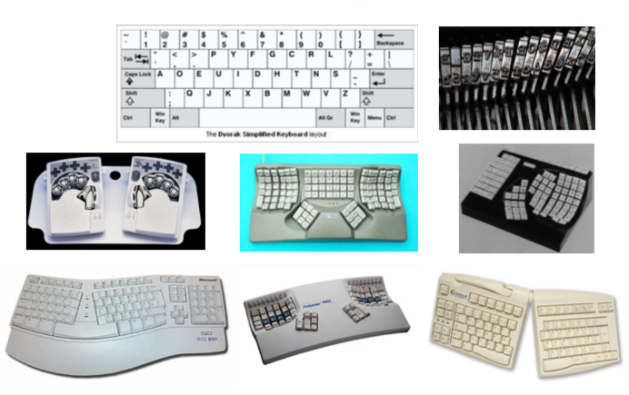

differences in:
- demographics - gender, age, education, socio-economic status
- culture - language, religion, ethnicity
- cognitive style - personality type
- disability - visual, motor, cognitive
- experience - subject domain, systems
how much should you tailor?
-
at this point you pretend that there's an average user, completely contradicting what was said a few lectures before
- but now you do it because it's useful and keeps the range broad
- specialised audience design - economics of markets, empathy with the users
- universal design - the kerb cut metaphor
peripherals, posture, stuff like this

usage related to socio-economic group, with wealth and education critical
accessibility features:
- sensory: visual (reduce width of field, color perceptions), audio (high freq hearing loss)
- motor: slower motor task response times, no fine motor control
- cognitive: decline in linguistic and reasoning ability, impairment of memory
- bold colors
- large buttons and text
do the research
- are there local sites offering similar goods/services?
- what are common design values and cahracteristics?
use any local knowledge you can get
test the design before deployment!
aims to provide guidelines, has a st of accessibility principles
perceivable:
- provide text alternatives for any non-text content (like alt tag)
- provide alternatives for time-based media
- create content that can be presented in different ways without losing information/structure
- make it easier for users to see/hear content (including foreground and background separation)
operable:
- make all functionality available from a keyboard
- provide users enough time to read and use content
- do not design content in a way that can cause seizures
- provide ways to help users navigate, find content, and determine where they are
understandable & robust:
- make text content readable and understandable
- make web pages appear and operate in predictable ways
- help users avoid and correct mistakes
- maximize compatibility with current and future user agents, including assistive technologies